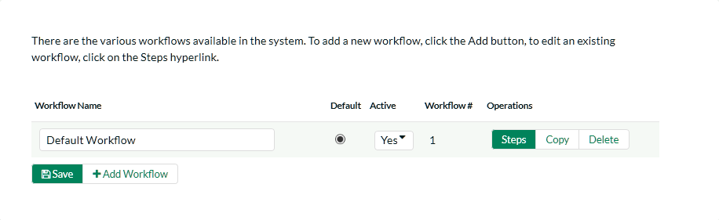
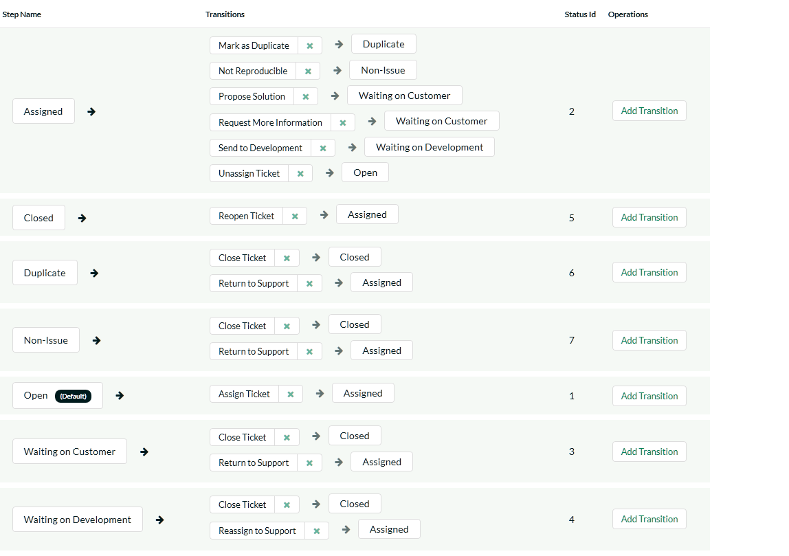
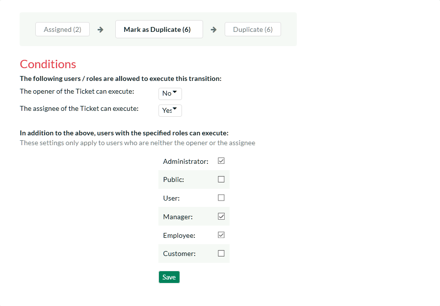
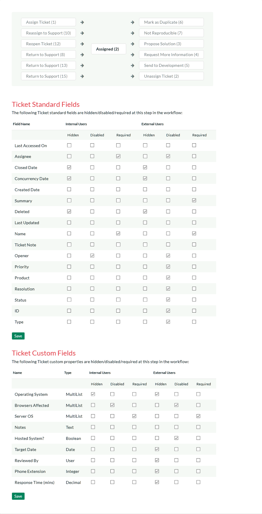

Workflows¶
This section displays a list of the defined ticket workflows in the system. A workflow is a predefined sequence of ticket statuses linked together by "workflow transitions" to enable a newly created ticket to be reviewed, prioritized, assigned, resolved and closed, as well as to handle exception cases such as the case of a duplicate or non-reproducible ticket. The initial workflow list screen when you first use the system is illustrated below:

To modify the name, default status, and/or active flags, simply change the values in the appropriate text-box, radio-button or drop-down list and click the [Save] button. To add a new workflow, simply click the [Add Workflow] button and a new workflow will be created with the standard KronoDesk steps and transitions.
You can have as many workflows as you like in a project, but only one can be marked as the default. Each KronoDesk product is assigned to a workflow; this allows you to have support tickets for different products follow different paths from creation to closure. However when a new product is created, it will be initially associated with the default workflow. The steps and transitions that make up the default workflow are illustrated in the diagram below:

Note: You can only assign an active workflow to a KronoDesk product, and similarly you cannot make a workflow inactive that is currently linked to at least one product. This is important as all products need to be linked to an active workflow at all times.
Edit Workflow Details¶
Clicking on the <Steps> button of an inactive workflow brings up the following screen that lists all the workflow steps and workflow transitions that comprise the workflow:

This page lists in the left-most column all the various incident statuses defined in the system. The next column lists all the possible transitions that can occur from that status. In addition, with each transition is listed the name of the resulting destination status that the transition leads to. E.g. from the assigned status, depending on your role (see later) you can move the ticket to either Open, Waiting On Customer, Waiting on Development, Duplicate and Non-Issue depending on which transition the user takes.
Clicking on the name of a step or transition takes you to the appropriate details page (see below) where you can set the properties of the step or transition respectively. To delete an existing transition, simply click the <Delete> button after the transition name, and to add a new transition, click the <Add Transition> button in the Operations column.
Edit Workflow Transition¶
When you click on the transition name link from the previous screen, you are taken to the workflow transition details screen:

The top part of the screen is the "workflow browser" which illustrates how the transition relates to the workflow as a whole. It displays the current transition in the middle, with the originating and destination steps listed to either side. Clicking on either ticket status name will take you to the appropriate workflow step details page. This allows you to click through the whole workflow from start to finish without having to return to the workflow details page.
Each transition has a series of conditions which need to be satisfied for a user to actually execute the transition (i.e. move the ticket from the originating status to the destination status). The conditions allow you to set three types of user role:
-
The opener of the ticket can be allowed to execute the transition when the transition occurs. For example, when a ticket is marked as Waiting on Customer, the opener should be the only one who's allowed to move it to Closed.
-
The assignee of the ticket can be allowed to execute the transition when the transition occurs. For example, when a ticket is marked as Assigned, the assigned agent should be the only one who's allowed to move it to Waiting on Customer.
-
A user with a specified role can be allowed to execute the transition, when the transition occurs regardless of whether they are the opener or assignee. For example a user with role "Manager" might want the power to close all tickets regardless of assignee status.
-
Whether a Digital Signature is required for this transition or not. If set to Yes, then when the transition is performed, the user must re-enter their username, password, and a note (if applicable) on the transition. This signature is recorded in the History for future reporting.
You can set any of these conditions by changing the drop-down list and/or check-boxes and clicking the appropriate <Save> button.
Edit Workflow Step¶
When you click on the ticket status name link from either of the previous screens, you are taken to the workflow step details screen:

The top part of the screen is the "workflow browser" which illustrates how the step relates to the workflow as a whole. It displays the current ticket status in the middle, with the possible originating and destination transitions listed to either side. Clicking on either workflow transition name will take you to the appropriate workflow transition details page. This allows you to click through the whole workflow from start to finish without having to return to the workflow details page.
This page allows you to define the behavior of the various ticket fields (i.e. those that are a standard part of KronoDesk such as Priority) and ticket custom properties for this particular step in the workflow. You can set each of the fields/custom properties as being hidden, disabled, and/or required for each step in the workflow, and for Internal (support) users, and External (end-user) users. Note that you cannot set a field/property as being required and disabled since this would prevent a user from ever updating the ticket. For example, when a ticket is in the Open status, you might make the assignee field inactive (since the opener shouldn't need to know who will ultimately work on it), when it gets to the Assigned status, you might make the field enabled and required. This allows you to tailor the information gathered to the appropriate place in the workflow.
To actually make these changes, all you need to do is select the appropriate checkboxes in the list of fields and custom properties and click the corresponding <Save> button.